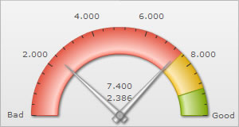
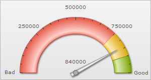

| Number Formatting basics | |||||||||||||||||||||||||||
FusionWidgets XT offers you a lot of options to format your numbers on the chart.You can configure number prefixes & suffixes, decimal places, and scaling of numbers based on a pre-defined scale. In this section, we'll see the number formatting properties supported by FusionWidgets and look into number scaling in the next section. We'll start with setting decimal precisions for the numbers on chart. |
|||||||||||||||||||||||||||
| Controlling decimal precision | |||||||||||||||||||||||||||
All the charts in FusionWidgets support the decimals attribute. This single attribute lets you control the decimal precision of all the numbers on the chart. Using this attribute, you can globally set the number of decimal places of ALL the numbers on the chart. By default, the decimal precision of all the numbers on the chart is set to 2. Using this attribute, you can re-define it. For e.g., if you have numbers on your chart as 2.386 and 7.4, by default the numbers will be rounded off to 2 decimal places and the numbers will become 2.39 and 7.4. To display all the 3 decimals of the first number, you need to explicitly set <chart ... decimals='3' >. |
|||||||||||||||||||||||||||
| |||||||||||||||||||||||||||
| Note that even though decimals has been set to 3, FusionWidgets doesn't forcefully add 0s to 7.4 and convert it to 7.400 or to any of the other numbers on the chart which originally have less than 3 decimal places. To forcibly add 0s to all these numbers, set <chart ... forceDecimals='1' ...> | |||||||||||||||||||||||||||
|  | |||||||||||||||||||||||||||
| Automatic number formatting | |||||||||||||||||||||||||||
| FusionWidgets allows you to format your numbers by adding K, M and proper commas to the numbers. The commas are added to the numbers by default. But to convert all the big numbers on the chart to numbers made smaller by using K or M, set <chart ...formatNumberScale='1' ...>. | |||||||||||||||||||||||||||
| |||||||||||||||||||||||||||
| If you don't want the numbers on the chart to be formatted using commas, you can set <chart .... formatNumber='0' ..> . But, setting formatNumber='0' will not format any decimal places too (even if explicitly specified in XML/JSON). | |||||||||||||||||||||||||||
|  | |||||||||||||||||||||||||||
| Commas removed from all the numbers | |||||||||||||||||||||||||||
| Setting custom thousand and decimal separator character | |||||||||||||||||||||||||||
By default, FusionWidgets uses . (dot) as decimal separator and , (comma) as thousand separator character. However, you can customize this character depending on your requirements. To do so, use the decimalSeparator and thousandSeparator attribute. For example, let's set our thousands separator as dot and decimal separator as comma. To do so, you'll have to use the following XML: <chart ... decimalSeparator=',' thousandSeparator='.' > Shown below is the output. |
|||||||||||||||||||||||||||
| |||||||||||||||||||||||||||
| Configuring thousand separator position | |||||||||||||||||||||||||||
|
FusionWidgets automatically decides the position of the thousand separator. By default, the thousand separator is placed after every three digits from right. A chart with default thousand separator position will look as under: Starting FusionWidgets XT -Service Release 1, you can customize the position of the thousand separator and place it as required. To place the thousand separator in custom positions you need to use the thousandSeparatorPosition attribute. Shown below is a chart with the thousand separator placed after four digits from right: In the above chart, the attribute thousandSeparatorPosition is set to '4'. So, the thousand separator (,) is placed after every four digits starting from right. You can also set multiple values (separated by comma) to this attribute, instead of a single value. Thus, you can specify complex thousand separator positions. For example, specifying multiple values, you can display numbers in Indian currency format, where the first thousand separator (for thousand) is placed after three digits from right and then onwards the thousand separator is placed after every two digits. Shown below is an example chart displaying Indian currency format: In the above chart, we have set thousandSeparatorPosition='2,3'. So, the thousand separator is first placed after 3 digits starting from right and then onwards after every two digits. Given below are some sample combinations of values which can be set to this attribute: | |||||||||||||||||||||||||||
| |||||||||||||||||||||||||||
| Note: Any negative value set to this attribute will be converted to a positive value. For example, thousandSeparator="-2" will be converted to thousandSeparator="2". | |||||||||||||||||||||||||||
| Adding number prefix and suffix | |||||||||||||||||||||||||||
FusionWidgets allows you to add a prefix or suffix to all the numbers on the chart. You can use the following attributes of the <chart> element to attain the same:
If you intend to use special characters for numberPrefix or numberSuffix, you'll need to URL Encode them when using Data String method. For example, if you wish to have numberSuffix as % (like 30%), you'll need to specify it as under: In Data URL method, you can directly specify the character. |
|||||||||||||||||||||||||||
| |||||||||||||||||||||||||||